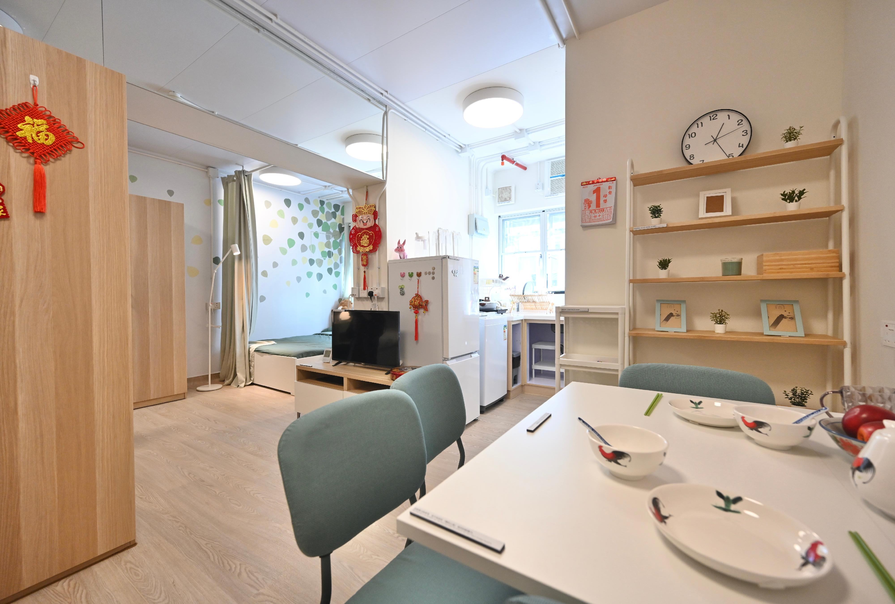

📍 場景：柴灣｜師傅：張丹楓｜WhatsApp 報價：852 5190 2328
秋風起咗，何太攞住一疊搬屋單據行入我地舖。佢眼角有啲紅，卻係笑住。
「丹楓師傅，我哋兩公婆加埋兩個細路，喺油尖旺邊皮嗰間放唔落一張大床嘅劏房住咗好幾年，月租貴到扣埋水電就剩唔到幾多。前排抽到柴灣常安街簡約公屋，單位有二十幾平方米，租金爭好遠。我同先生諗住，今次終於可以『起屋』——唔係裝豪，係想將搬屋用到嘅嘢，一次過歸好位。」
我望住個平面圖，面積唔算大，但窗會講嘢——有對流、有自然光。呢種「有得開窗」嘅單位，就係同劏房最大分別。我同何太講：
「何太，你依家個單位大概二十五平方米，即係二百七十呎左右，係好合理嘅細單位尺寸。面積細，唔假。但細嘅唔係你間屋，係你諗住『要間一間房先叫齊全』嗰個念頭。」
何太愣一愣：「吓？唔間房？我兩個細路點瞓？」
「你聽埋我先講。香港小單位最關鍵，係唔好淨係諗『有幾多間房』，而係諗『一個位可以做幾多件事』。」
近年政策同市場都朝住「細而實用」方向行：資助出售房屋入場呎數更貼近一般家庭，未來公屋單位面積亦會加大約一成，同時預留一批約二百呎嘅細單位照顧長者需要。所以小單位設計唔係「無奈」，係要學識點樣「一個位當幾個位使」。
何太好慳家，我哋先畫平面圖。全屋訂造唔係將每個縫隙都填滿——係先諗「邊啲位置用得著」，先再填位。
我指住圖：「你唔使特登間一間兒童房。兩個細路，一個六歲、一個十三歲，一個要書枱，一個要鋼琴位。」我拎起色筆，「我建議做『一體高架床』：上床瞓、下床做書枱，中間嗰級樓梯每一級都係儲物桶。」
何太眼都光咗：「嗰種『樓梯當櫃』，真係用得晒？」
「點解唔得。樓梯下、床位下、床底，全部空位放番冬天棉被同雜物。細單位嘅最大樂趣，就係將『佔咗好多位但係擺唔到嘢』嘅角落，逐個變成『用得著嘅位』。」
我又攤開衣櫃位置嘅圖：「呢度，我建議做一個頂天立地嘅嵌入式儲物櫃：上層放被褥，中層掛衫，下層做活動抽屜，櫃腳離地十厘米。咁樣就算屋企細，都唔使為搵一件衫翻箱倒櫃。」
何太開始明：「即係唔係鬥邊間大，係鬥邊間『一處兩用』。」
「一語中的。」
「冇間房，咁個廳點算呀？」何太問。
我喺圖上畫咗一條虛線：「你睇，個廳日頭係客廳；夜晚一拉簾，就變成你兩公婆嘅睡房。唔係『間房』，係『跟時間表郁』：下晝到傍晚係飯廳；十點後，梳化一拉平，變成床。」
「梳化變床？」何太細聲問。
「係。我建議做『兩用座』：日頭係闊梳化，夜晚先將中間部分拉出變底床，床褥成套收喺梳化底下嘅儲物墩。唔使搬床位，又唔怕潮濕。」
「香港唔同隔籬埠，好多單位係『時間斗室』——要跟住生活節奏去安排傢俬，而唔係叫生活去遷就一張唔郁得嘅大梳化。」
跟住我哋逐個位核對：何太最鍾意嘅係廚房嗰個「拉出式烘焙／切菜枱」，砧板收起就變工作枱；小朋友最開心係書枱前嗰幅「磁貼牆」，可以貼滿自己啲功課同貼紙。就算地方細，都唔使將生活慳到變成「住喺貨倉」。
我坐喺地舖門外，望向斜陽：「因為慳位唔係慳嘢，係慳『慌』。」
何太側頭。
「你由劏房搬過嚟，最怕係咪『行兩步就撞到嘢』、『搵嘢要搬開好幾件先攞到』？我哋做訂造嘅，最想做到『隨手有、隨手擺、行得順』。一間屋再大，如果亂過劏房，都係白住；一個單位再細，如果行得順、放得落、夜晚瞓得正，就係好屋。」
何太眼眶濕咗：「劏房嗰七年，我真係冇試過『想攞乜，一伸手就有』。」
我收起卷尺：「咁就啱喇。今次全屋訂造，我哋唔係幫你『整靚間屋』——係幫你『重新安排生活』。你有咩搬屋前想要嘅，記低晒，我下次帶材料上門度尺，一次過幫你歸好位。」
何太連聲道謝，攞住平面圖離開。太陽斜斜咁穿過嗰排可以打開嘅窗，灑喺一幅未出世、卻已經安排好晒每個位嘅屋企圖上。
簡約公屋單位約 14至32平方米（約150至345呎），因應家庭人數編配。以柴灣常安街項目為例，提供超過1,700個單位，月租約1,340至3,020元（來源：房屋局局長何永賢公布／《香港文匯報》2026年6月30日報道）。二百幾呎夠唔夠？只要做好空間規劃同訂造，兩至四人入住完全可行——重點唔係面積大，係每個位置都用得其所。
先造「頂天立地收納櫃」（衣櫃／儲物櫃），因為佢最善用垂直空間，收納量最大。其次係「一體高架床＋書枱＋儲物梯級」，同「兩用梳化床」。呢三類係細單位出晒名嘅「慳位神器」，建議一次過度好位，避免愈住愈多「得睇唔用得」嘅雜物角。
唔會。「開放式」唔等於「一眼睇晒」。可以用布簾、活動屏風、半高櫃或吊軌拉簾做軟間隔：拉開即成一個開揚大廳，收起又分明兩個空間。日頭係客廳，夜晚拉簾就變睡房，私隱同空間感兩者兼得，仲慳返房嘅地面位。
香港近海地區潮濕，訂造櫃記住三樣：① 櫃腳離地8至10厘米加防水踢腳板，避免拖地水或地面回潮入板；② 水槽、爐頭附近板材用防水密度板，接縫打防霉玻璃膠；③ 背板預留透氣位，避免密實藏濕。外層貼防潮仿木皮，內部可加防潮珠盒。設計時留好「散氣位」，櫃就唔易發霉。
訂造平貴睇用料同數量，唔係「一訂造就必然貴」。如果集中做「頂天櫃＋高架床」呢幾件最關鍵嘅傢俬，其餘用合尺寸現成傢俬配搭，往往比「買一堆唔合用嘅現成櫃」更慳——因為每厘米都用得晒。我哋上門免費度尺，出報價後你可以按預算簡化用料。